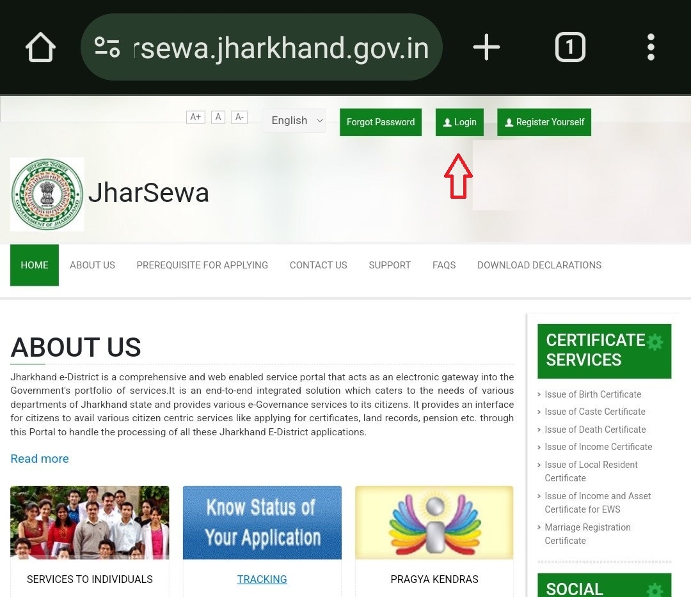
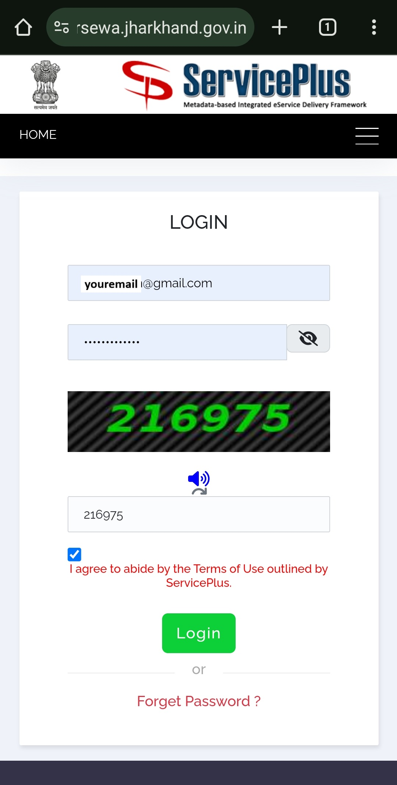
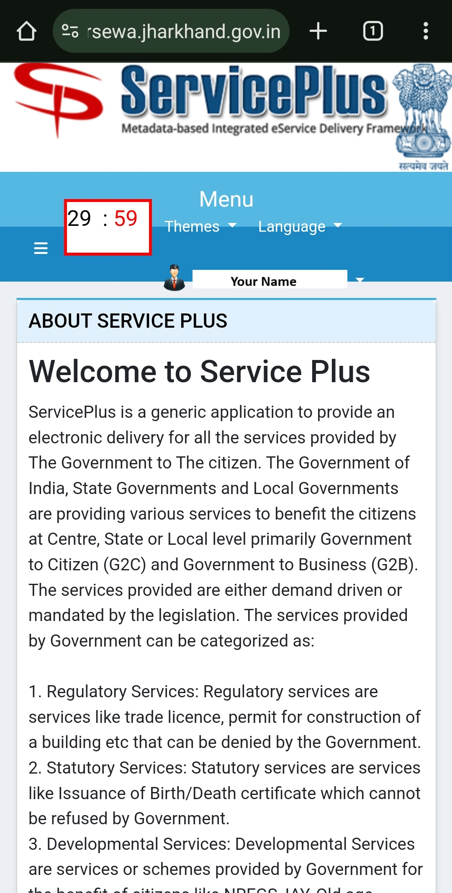

JharSewa पर Login करने के लिए नीचे दिए गए Steps का पालन करें :-
(कृपया आगे बढ़ने से पहले एक बार सभी निर्देश पढ़ें)
- झारसेवा वेबसाइट पर जाएँ Click Here.
- Login बटन पर क्लिक करें

- अपना Email और Password भरें, सही कैप्चा दर्ज करें और Login बटन पर क्लिक करें

- आपने JharSewa पर सफलतापूर्वक Login कर लिया है
